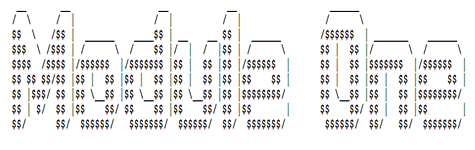
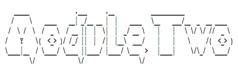
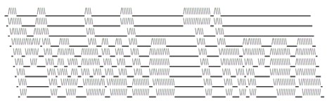
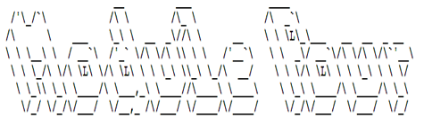

Technology is the campfire around which we tell our stories. -- Laurie Anderson
An offering in the Technology and Society minor at UVic, this course is about the entanglement of societies and cultures with Western technologies. We'll examine some histories of these entanglements, discuss their effects today, and also speculate about their trajectories. One important question will persist throughout the term: how can and should we intervene in technologies as practices? Rather than treating technologies as tools we use or objects we examine from a distance, we'll prototype with and through them as a form of inquiry. You'll turn patents into 3-D forms, compose and implement design scenarios, "datify" old tech, and imagine a device you want to see in the world. You'll document your research and development process along the way, reflect on what you learned, present your prototypes and findings, and also build a vocabulary of "keywords" for technology and society. I will not assume that you're familiar with fields such as science and technology studies, media studies, or cultural studies, and the prototyping exercises will rely on low-tech approaches. Technical competency required: know how to send an email. I'm looking forward to working with you.


MODULE 1: Memory, Novelty, Obsolescence
Technologies are entwined with the social and cultural production of memory, novelty, and obsolescence. Consider the use of search engines to recall information, the rate at which mobile devices are discarded, or how frequently software and social networks demand an update. What might history tell us about these issues, and what might we learn from prototyping old technologies that were once new?
LEARNING OUTCOMES: This module focuses on:
- Conducting historical research with digitized materials: You should use an online resource such as the Canadian patents database to locate a patent for a technology that no longer exists, is no longer popular, or both. Please include the patent (or a link to it) in your log, together with (references to) other patents you considered;
- Contextualizing the production, novelty, and obsolescence of a technology: You should use historical materials such as journal and magazine articles to determine why the technology was popular (or interesting) at the time and also why it was rendered obsolete. Please present this information to the class and also include it in your log;
- Integrating theories of technology (namely, theories of memory and forgetting) into historical research: You should determine what the technology "remembered" for people, or what it allowed them to either forget or ignore. Please present this information to the class and also include it in your log;
- Remaking a technology to better understand not only the assumptions of 2-D patents and screen-based research but also the forms and functions of a historical device: Prototype your 2-D patent in 3-D form using low-tech materials such as paper, cardboard, and glue. If possible, produce a functioning prototype (e.g., demonstrating how the mechanisms worked). Please demonstrate your prototype to the class;
- Sharing the research and prototyping process: You should document the entire prototyping process to identify the component parts of the technology, the relationships between those parts (an "exploded view diagram"), and the form of the technology itself. In your documentation, please include photographs, video, sketches, and/or audio of the research and prototyping process together with notes from the workshops, lectures, and assigned readings and video; and
- Reflecting on the research and prototyping process: You should write about your patent and prototype, with an emphasis on what you learned about memory, novelty, or obsolescence. Please include this written piece in your log.
KEYWORDS: affect (Anna Munster), angel of history (Walter Benjamin), archaeology (Wolfgang Ernst and Jussi Parikka), black box (Bruno Latour), entanglement (Karen Barad), failure (Edward Jones-Imhotep), formats (Jonathan Sterne), index (Mary Ann Doane), infrastructure (Shannon Mattern), interface (Lori Emerson), magic (Arthur C. Clarke and Carolyn Marvin), memory (Wendy Hui Kyong Chun), new media (Lisa Gitelman and Lev Manovich), planned obsolescence (Giles Slade and Kathleen Fitzpatrick), preservation (Dene Grigar), remediation (Jay David Bolter and Richard Grusin), and storage (Matthew Kirschenbaum)
PROTOTYPING TECHNIQUE: 2-D to 3-D Translation
M 11 SEPT: Watch (before class) "First Sounds: Humanity's First Recordings of Its Own Voice" (David Giovannoni) and "When Games Went Click: The Story of Tennis for Two" (Raiford Guins, Laine Nooney, Vlad Nudin, et al.) | Form Groups (in class) | Watch (in class) "Uluatore" (Fiona Keenan) | Lecture: From Inventors and Innovation to Mess and Maintenance | Workshop: Logging Your Work in this Course
R 14 SEPT: Read (before class) "Society" (Glenn Hendler) and "Technology" (me) | Lecture: Beyond Tools and Instruments | Workshop: Finding and Reading Patents
M 18 SEPT: Read (before class) "Funes the Memorious" (Jorge Luis Borges) and "The Story of Cold Dark Matter" (Cornelia Parker and Tate) | Watch (in class) "Memex Animation: Vannevar Bush's Diagrams Made Real" (University of Sheffield) | Lecture: Re-membering the Past | Workshop: The Exploded View
R 21 SEPT: Research and Develop Your First Prototype (before and during class) | Workshop: Absence, Form, and Practice in Patents
M 25 SEPT: Finish and Present Your First Prototype (before and during class) | Discussion: How Do We Feel about Prototyping?
LOG FOR MODULE 1 (11 Sept - 25 Sept): Find a patent (dated between 1850 and 1950) for a technology that no longer exists, is no longer popular, or both. Determine why it was considered to be novel during its time and why it was rendered obsolete. Also determine what the technology was expected to "remember" (recall, process, and/ or compile) for people. After you've conducted this research and written down your findings in your log, use materials of your choice (e.g., paper, cardboard, plasticine, software, or CNC) to bring your technology off the page, translating your 2-D patent into a 3-D form. (Bonus points if you get [parts of] your prototype to work.) Once you've prototyped the 3-D form, use ~400 words to communicate what you learned about memory, novelty, or obsolescence (pick one) from the prototyping process. Be sure to log your research and prototyping as you progress through the module (from 11 Sept to 25 Sept). Include in the log some documentation of the process (e.g., photographs, sketches, audio, and/or video) as well as notes from the workshops, lectures, and assigned readings and video.
^^^ top of page ^^^

MODULE 2: Design, Context, Critique
Design is much, much more than adding a layer of polish to a technology or form. It is also a means of embodied experimentation and critique, and it can contextualize technology's development and use. While a lot of popular design is now associated with templates, filters, skins, and bundles of files, this module foregrounds it as a scenario, which can be scripted, implemented, and integrated into social and cultural issues.
LEARNING OUTCOMES: This module focuses on:
- Identifying contexts of use in historical materials: You should survey historical materials (online or in the library) that provide contexts for how your patent and technology from Module 1 were used, operated, or consumed. Please include relevant links and references in your log;
- Understanding the gaps or absences in historical mateirals: Relying on historical materials, you should determine who and what are missing accounts of your technology from Module 1. This research should operate as a form of historical critique. Please include this information in your log;
- Integrating theories of technology (namely, theories of design and reconstruction) into historical research: You should communicate how reconstructing a situation or context of use helps us to better understand technology as a social and cultural practice at a given moment. Please present this information to the class and also include it in your log;
- Protoyping a context of use ("design scenario") to examine not only the assumptions of 2-D patents and screen-based research but also the uses and contingencies of a historical device: Prototype your 2-D patent in 3-D using a design scenario intended for performance. Treat your design scenario like a script or user's manual, complete with characters (at least three), actions, setting(s), and a perspective. Perform the scenario at least twice and, if possible, document the performance (e.g., using video). Please share your scenario with the class and include all of its components (such as the personas, force map, and script) in your log;
- Sharing the research and prototyping process: You should document the entire prototyping process to identify the components of your context of use, the relationships between those components (a "force map"), what's missing or absent from the historical materials (critique), and the context and use of the technology itself. In your documentation, please include photographs, video, sketches, and/or audio of the research and prototyping process together with notes from the workshops, lectures, and assigned readings; and
- Reflecting on the research and prototyping process: You should write about your patent, technology, design scenario, and context of use, with an emphasis on what you learned about design, context, or critique. Please include this written piece in your log.
KEYWORDS: adaptation (John Ira Jennings), adaptive (Sara Hendren), adversarial (Carl DiSalvo), aesthetics (Miriam Hansen), customization (ginger koons), critical (Jeffrey Bardzell and Shaowen Bardzell), critique (Michel Foucault and Judith Butler), design fiction (Bruce Sterling), embodiment (Jessica Rajko), experiments (Natalie Jeremijenko), graphic (Johanna Drucker), interaction (Paul Dourish), kit-of-no-parts (Hannah Perner-Wilson), making (Matt Ratto and Garnet Hertz), reverse engineering (Anne Balsamo), standards (Susan Leigh Star), storytelling (Erik Loyer), text (Anne Burdick), use (Andrea Botero), and values (Helen Nissenbaum)
PROTOTYPING TECHNIQUE: Design Scenario
R 28 SEPT: Peruse (before class) What Jane Saw (Janine Barchas) and Making Core Memory, including @lolweavers (Daniela K. Rosner et al.) | Lecture: Immerse Yourself and Critique It, Too?
M 2 OCT: Read (before class) "Media" (Lisa Nakamura) and "Space" (Helen Morgan-Parmett) | Lecture: What's Wrong with User-Centred Design? | Workshop: Composing Force Maps and Diagramming Scenarios
R 5 OCT: Read (before class) "Making the Model: Scholarship and Rhetoric in 3-D Historical Reconstructions" (Elaine Sullivan, Angel David Nieves, and Lisa M. Snyder) | Lecture: Design, Contingency, and Embodiment | Workshop: Making Storyboards
R 12 OCT: Research and Develop Your Second Prototype (before and during class) | Workshop: Implementing Design Scenarios
M 16 OCT: Finish and Present Your Second Prototype (before and during class) | Submit Your Log for Mid-Term Assessment | Discussion: How Do We Feel about Design Scenarios?
LOG FOR MODULE 2 (28 Sept - 16 Oct): Return to your first prototype and the corresponding patent. Research the context in which the patent was developed and the technology was used. Look for materials in journals, magazines, advertisements, photographs, online archives/collections, and even fiction. Based on these materials, develop a design scenario detailing how your technology would have been operated (or used, or consumed) during its time. Since you weren't there and you can't inhabit the past, your scenario will necessarily make an argument about history and even a critique of existing approaches to the past. The scenario should at a minimum include the following elements: characters, setting(s), actions, and a perspective. You are welcome to compose it as a text-only script, but don't hesitate to include photographs and/or illustrations. Once it's ready, implement it at least twice. This means you'll need some people (in your group or not) to act it out. (Bonus points if you record an implementation and submit the video as part of your log.) Once you've prototyped your design scenario, use ~400 words to communicate what you learned about design, context, or critique (pick one) from the prototyping process. Be sure to log your research and prototyping as you progress through the module (from 28 Sept to 16 Oct). Include in the log some documentation of the process (e.g., photographs, sketches, audio, and/or video) as well as notes from the workshops, lectures, and assigned readings and web materials.
^^^ top of page ^^^

MODULE 3: Labour, Play, Control
Digital technologies are frequently associated with discrete-task precarity and 24/7 productivity. Attention produces value (or data), and many decisions are delegated to algorithms and moderators. The work may feel or appear immaterial, too. What, if anything, do we learn from quantifying social and cultural activities, and can technologies be used to improve labour conditions?
KEYWORDS: algocracy (A. Aneesh), algorithm (Kate Crawford), attention economy (Jonathan Beller), big data (Jodi Dean), casual (Aubrey Anable), computer vision (Trevor Paglen), control (Gilles Deleuze and Alexander Galloway), culture industry (Theodor Adorno and Max Horkheimer), environment (Nicole Starosielski), Fordism (Karl Marx and Nick Dyer-Witheford), goldfarming (Lisa Nakamura), gamification (Ian Bogost), hacking (Gabriella Coleman), immaterial labour (Maurizio Lazzarato), informatics of domination (Donna Haraway), internet of things (Beth Coleman), labour (Hannah Arendt), Luddism (Karl Marx and Nick Dyer-Witheford), master's tools (Audre Lorde), Mechanical Turk (Ayhan Aytes), moderation (Adrian Chen), noise (Tara Rodgers and Tricia Rose), play (Mary Flanagan), playbour (Trebor Scholz), scientific socialism (Karl Marx and Nick Dyer-Witheford), security (Zach Blas), wages (Selma James), and work (Hannah Arendt)
PROTOTYPING TECHNIQUE: Datification
R 19 OCT: Read (before class) "Digital" (Tara McPherson), "Labor" (Vicki Mayer) and "Data" (Melissa Gregg and Dawn Nafus) | Lecture: All of Your Fun Belongs to Them
M 23 OCT: Play (before class) games by Mattie Brice, Molleindustria, and Nicky Case | Watch (during class) Sleep Dealer | Lecture: From Surveillance to Control | Workshop: Experiments with Quantification
R 26 OCT: Read (before class) "Number Between 0 and 1" (Siah Armajani and MoMA) | Peruse (before class) "Maps" (Ingrid Burrington) | Lecture: Where's the Material? | Workshop: Building a Data Model
M 30 OCT: Research and Develop Your Third Prototype (before and during class) | Workshop: Sharing Your Data
R 2 NOV: Finish and Present Your Third Prototype (before and during class) | Discussion: How Do We Feel about Data?
LOG FOR MODULE 3 (19 Oct to 2 Nov): Return to your technology from Prototypes 1 and 2. At this point in the term, you should have a 3-D version of that technology's form as well as a design scenario for its historical use or operation. Now I'm asking you to conjecture a bit. Research the technology a touch more and determine a way that it could produce data. Since your technology was patented during the age of mechanical reproduction, it probably did not output data in digital form. (Please correct me if I'm mistaken. I likely am.) But if it could, then what sort of data would it create? When? Where? For whom? Under what assumptions? And to what effects on everyday users? For instance, would the technology encourage play? Gamify an activity? Increase productivity? Increase leisure time? Improve quality of life? Automate a particular task? Control or regulate a particular process? Feel free to imagine negative, positive, or mixed results. Once you've answered these questions, please prototype a "datified" version of your old technology. The prototype should include the following: an example or instance (such as an illustration, model, or physical object) of your datified old tech, some sample data (which can be generated manually), and a data model (which could be expressed through a spreadsheet, diagram, or even code). (Bonus points if you automate the production of your data.) When you are finished researching and prototyping, use ~400 words to communicate what you learned about labour, play, or control (pick one) from the prototyping process. Be sure to log your research and prototyping as you progress through the module (from 19 Oct to 2 Nov). Include in the log some documentation of the process (e.g., photographs, sketches, audio, and/or video) as well as notes from the workshops, lectures, and assigned readings, games, film, and web materials.
^^^ top of page ^^^

MODULE 4: Speculation, Change, Responsibility
Speculation often involves imagining alternatives and other worlds, landscapes, and conditions. It is also used to craft fictions that comment on the present moment. How might it apply to the production of new or hypothetical technologies, not so much for the purposes of innovation or "disruption," but to consciously engage social and cultural issues? Or, from another perspective, how might it stress the aesthetic and political dimensions of technologies in the face of efficiencies?
KEYWORDS: AfroFuturism (Alondra Nelson and Ishmael Reed), anthropocene (Donna Haraway and McKenzie Wark), counterfactuals (Mark Sample), craft (Leah Buechley), decolonization (Ellen Cushman and micha cárdenas), forgery (Thomas J. Wise), futures (Damian White), manifesto (Jo Guldi), modern Prometheus (Mary Shelley), posthuman (N. Katherine Hayles), retrocomputing (Quinn DuPont), science fiction (Darko Suvin and Octavia Butler), social justice (Amanda Phillips), speculative design (Anthony Dunne and Fiona Raby), speculative fiction (Margaret Atwood), survivance (Gerald Vizenor), utopia (Fredric Jameson), and vapourware (Geert Lovink)
PROTOTYPING TECHNIQUE: Speculative Design
M 6 NOV: Peruse The Extrapolation Factory | Play (before class) games by Elizabeth LaPensée | Listen (before class) to Quazarz: Born on a Gangster Star (Shabazz Palaces) or watch them live | Watch (during class) The Last Angel of History (John Akomfrah) | Lecture: Immediate and Long Views | Schedule a Group Meeting with Me
R 9 NOV: Read (before class) "The Ones Who Walk Away from Omelas" (Ursula K. Le Guin) | Lecture: Realism and Idealism in Speculative Design | Workshop: Foregrounding Values when Imagining a Device (Wireframing and Design Briefs)
M 20 NOV: Read (before class) "Finding Faultlines: An Approach to Speculative Design" (Kari Kraus) | Listen (before class) to "Being Siri" (Erin Anderson) | Lecture: Subjunctive Practices across Media | Workshop: From "What If . . . ?" to Responsibility
R 23 NOV: Watch (before class) Transformers: The Premake (a desktop documentary) (Kevin B. Lee) | Research and Develop Your Fourth Prototype (before and during class) | Workshop: Polishing a Speculation, or Refining a Possible Future | Discussion: Preparing for Your Final Presentations and Final Exam
M 27 NOV: Finish Your Fourth Prototype (before and during class) | Discussion: How Did It All Go?
R 30 NOV: Final Presentations | Submit Your Log for Assessment
LOG FOR MODULE 4 (9 Nov - 30 Nov): You're almost done. For your final prototype, I'm leaving most of the parameters to you. You should now have three prototypes based in a single technology: a 3-D form, a design scenario, and a datified machine from the age of mechanical reproduction. This prototype should build on your work throughout the term by re-imagining your technology as an intervention in (or engagement with) a particular social or cultural issue. While it's tempting to approach this exercise from an instrumentalist perspective, I encourage you to treat your technology as a practice, or as congealed labour, involving human and nonhuman elements. What practices do you and/or others want to see in the world? How might your technology facilitate, shape, accelerate, mediate, or otherwise influence those practices? You can decide how to present this new technology in your log. For instance, you could produce a sketch, wireframe, model, video, code, or functioning prototype. I only ask that some "core" element of the original technology (or how the mechanism turned this into that) remain at play in your speculation. Together with your prototype, please use ~400 words to write a speculative design brief about your technology's approach to change and responsibility. Be sure to log your research and prototyping as you progress through the module (from 9 Nov to 30 Nov). Include in the log some documentation of the process (e.g., photographs, sketches, audio, and/or video) as well as notes from the workshops, lectures, and assigned readings, games, films, sounds, and web materials.
^^^ top of page ^^^
The University of Victoria acknowledges and respects the Songhees, Esquimalt, and WSÁNEĆ peoples on whose traditional territories the University stands and whose historical relationships with the land continue to this day.
I owe an incredible debt of gratitude to Carl DiSalvo, Tom Foster, Garnet Hertz, Patrick Jagoda, Virginia Kuhn, Kari Kraus, Shannon Mattern, Tara McPherson, Lisa Nakamura, Amanda Phillips, and Thenmozhi Soundararajan, whose approaches to teaching technology, society, and culture have especially influenced the construction of this syllabus.